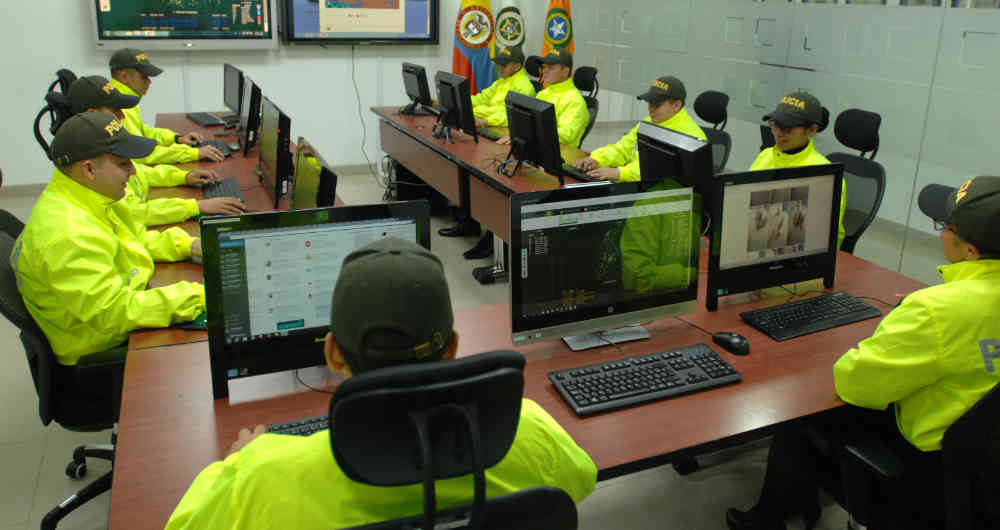

Así está Colombia en el ranking de ciberseguridad mundial
Una plataforma especializada en servicios tecnológicos analizó las infecciones a dispositivos, los ataques a sistemas financieros y la legislación de 60 países para determinar qué tan seguros son frente al cibercrimen. Colombia sufre problemas significativos de ciberseguridad pero esas falencias no son tan críticas si se comparan con las de otros países de la región, e incluso del mundo desarrollado. El balance lo entregó Comparitech, una plataforma especializada en el análisis de servicios tecnológicos.
Así está Colombia en el ranking de ciberseguridad mundial Foto: Policía Nacional
Entre 60 países estudiados, donde Argelia, el que ocupó el primer puesto, tiene los peores índices de ciberseguridad, y Japón, en el último puesto, tiene los mejores, Colombia quedó en el renglón 39. Es decir, el país están en el rango medio de la seguridad en la red.
El análisis tomó en cuenta siete categorías. Encontró, por ejemplo, que en Colombia el 12,52% de los dispositivos móviles están infectados con algún tipo de malware diseñado para entrar o destruir el sistema sin autorización del usuario. Es un porcentaje medio, si se tiene en cuenta que en Japón es apenas del 1,34% pero en Nigeria del 28%. En computadores, las infecciones son mayores y, en Colombia, afectan al 16,4% de los sistemas.
Al país no le fue muy bien en la calificación de su legislación, que mide qué tan actualizada está para brindar garantías de ciberseguridad. El puntaje fue de 4 sobre 10, aunque ningún país pasó de 7, ni China ni Francia, los mejor posicionados en ese ítem. Precisamente, el Gobierno de Iván Duque ha intentado modernizar la ley de las TIC en Colombia, pero sus propuestas han recibido críticas, especialmente por el trato a la televisión pública, y el Congreso las puso en lista de espera para su análisis.
Sobre qué tan preparado está el país para resistir un ciberataque, el puntaje que se lleva es de 0,56, cuando 1 es el tope. Colombia sale bien librada en cuanto a la cantidad de ataques cibernéticos que se originan desde aquí, y en los ataques con software que infecta dispositivos para la minería de criptomonedas sin autorización.
Según el análisis, en Colombia se producen el 0,5% de los ataques al software financiero con el que se pretende robar a los usuarios. En los países peor calificados, ronda el 2%.
omparado con los 6 países de Latinoamérica que fueron medidos, Colombia sale bien librado en el 5 puesto (de peor a mejor), solo superada por México. Incluso está mejor calificado que países europeos como Italia, Grecia o Portugal. Pero también peor que otras 21 naciones. A la luz del informe, el país tiene mucho por mejorar en materia de ciberseguridad, pero su diagnóstico no es crítico.
(2019, 13 de febrero). Así está Colombia en el ranking de ciberseguridad mundial.semana. Recuperado de https://www.semana.com/